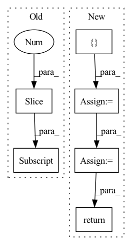

Pattern ID :2338
Before Change
def forward(self, feat_maps, smap, lmap=None, shape=None):
assert not xor(self.lmap_in is True, lmap is not None)
for i, f in enumerate(feat_maps):
if f.shape[-2:] != shape:
feat_maps[i] = self.upsample(f, shape)
x = torch.cat(feat_maps, dim=1)
b, c, h, w = x.shapeAfter Change
context = torch.bmm(sim, value).permute(0, 2, 1).contiguous().view(b, -1, h, w)
context = self.conv_out1(context)
x = torch.cat([ x, context = self.conv_out3(x)
out = self.conv_out4(x)
return x, outIn pattern: SUPERPATTERN
Frequency: 3
Non-data size: 6
Instances Fragment ID: 14426844
Project Name: plemeri/inspyrenet
Commit Name: c355ab0cc90c9a3d27726822c1223d2f98cd0f0c
Time: 2021-11-01
Author: taehoon1018@postech.ac.kr
File Name: lib/modules/attention_module.py
M Class Name: ASCA
N Class Name: ASCA
M Method Name: forward(4)
N Method Name: forward(5)
M Parent Class: nn.Module
N Parent Class: nn.Module
M File Name: lib/modules/attention_module.py
N File Name: lib/modules/attention_module.py
M Start Line: 81
M End Line: 132
N Start Line: 127
N End Line: 136
Before Change
inters.append(conv(out)) // P6td = conv(P6in + resize(P7td))
// bottom-up
inters = inters[::-1] // feature maps from bottom to top, same order as input x
outputs = [inters[0]]
for i, conv in enumerate(self.output_convs):
out = F.interpolate(outputs[-1], scale_factor=0.5, mode="nearest") // resize(P3td)After Change
def forward(self, x: List[torch.Tensor]) -> List[torch.Tensor]:
// top-down
tds = [ None = self.td_fuses[i]([x[i], self.upsample(tds[i+1])]) // P6td = conv(P6in + resize(P7td))
// bottom-up
outs = [None] * self.num_levels
outs[0] = tds[0]
for i in range(self.num_levels - 2):
outs[i+1] = self.out_fuses[i]([x[i+1], tds[i+1], self.downsample(tds[i])]) // P4in + P4td + resize(P3td)
outs[-1] = self.out_fuses[-1]([x[-1], self.downsample(tds[-2])]) // P7in + resize(P6td)
return outs
class WeightedFeatureFusion(nn.Module): Fragment ID: 14426845
Project Name: gau-nernst/vision-toolbox
Commit Name: 0844b6bcb142e63b09cf6ae44e5087c20d52c380
Time: 2022-04-10
Author: gau.nernst@yahoo.com.sg
File Name: vision_toolbox/necks.py
M Class Name: BiFPNLayer
N Class Name: BiFPNLayer
M Method Name: forward(2)
N Method Name: forward(2)
M Parent Class: nn.Module
N Parent Class: nn.Module
M File Name: vision_toolbox/necks.py
N File Name: vision_toolbox/necks.py
M Start Line: 163
M End Line: 180
N Start Line: 160
N End Line: 172
Before Change
if self.training and self.layer_dropout > 0:
to_drop = torch.empty(len(self.blocks)).uniform_(0, 1) < self.layer_dropout
blocks = [block for block, drop in zip(self.blocks, to_drop) if not drop]
blocks = self.blocks[:1] if len(blocks) == 0 else blocks
block_args = list(map(lambda x: {"f_args": x[0], "g_args": x[1]}, block_args))
return _ReversibleFunction.apply(x, blocks, block_args)After Change
self.blocks = nn.ModuleList([ReversibleBlock(f=f, g=g) for f, g in blocks])
def forward(self, x, **kwargs):
x = torch.cat([ x, x = _ReversibleFunction.apply(x, blocks, args)
return torch.stack(out.chunk(2, dim=-1)).sum(dim=0)
Fragment ID: 14426847
Project Name: lucidrains/sinkhorn-transformer
Commit Name: d5b9c649e59290b15c15f85d0bb182cb20b699fb
Time: 2020-04-15
Author: lucidrains@gmail.com
File Name: sinkhorn_transformer/reversible.py
M Class Name: ReversibleSequence
N Class Name: ReversibleSequence
M Method Name: forward(2)
N Method Name: forward(2)
M Parent Class: nn.Module
N Parent Class: nn.Module
M File Name: sinkhorn_transformer/reversible.py
N File Name: sinkhorn_transformer/reversible.py
M Start Line: 133
M End Line: 142
N Start Line: 161
N End Line: 174